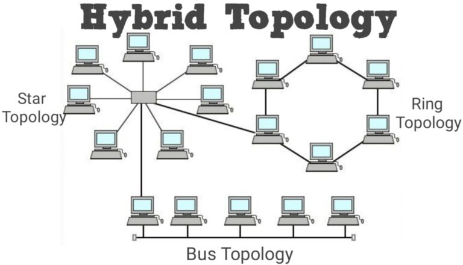
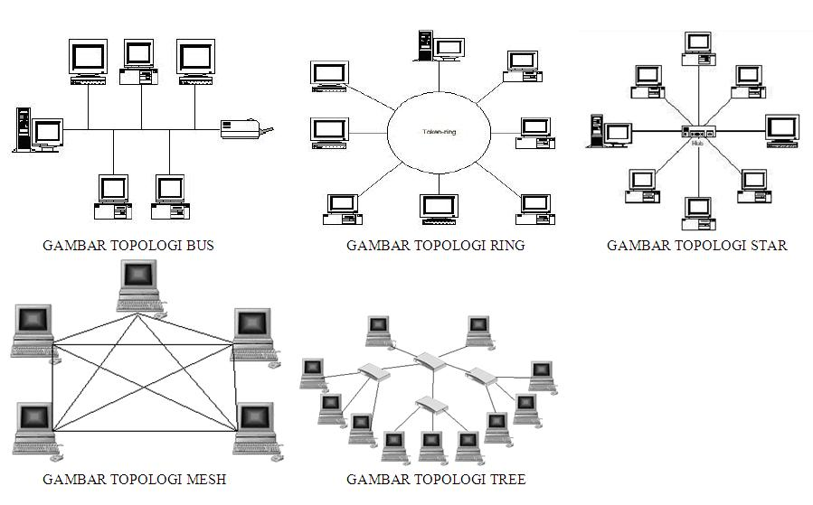

Jenis Jaringan Komputer berdasarkan Topologi

- Topologi Bus
- Deskripsi: Semua perangkat dihubungkan ke satu kabel utama atau "bus".
Data yang dikirimkan oleh satu perangkat disebarkan ke semua perangkat lain di
jaringan melalui kabel utama ini.
- Keuntungan:
- Mudah diimplementasikan dan membutuhkan sedikit kabel.
- Biaya instalasi rendah.
- Kelemahan:
- Jika kabel utama mengalami kerusakan, seluruh jaringan akan terputus.
- Sulit untuk mendeteksi kesalahan.
- Topologi Star
- Deskripsi: Semua perangkat terhubung ke satu titik pusat, seperti hub atau
switch. Data dari satu perangkat harus melalui perangkat pusat sebelum mencapai
perangkat lain.
- Keuntungan:
- Mudah untuk menambahkan atau menghapus perangkat tanpa mengganggu jaringan lain.
- Jika satu perangkat gagal, tidak mempengaruhi perangkat lain.
- Kelemahan:
- Jika hub atau switch pusat mengalami kerusakan, seluruh jaringan akan terpengaruh.
- Membutuhkan lebih banyak kabel daripada topologi bus.
- Topologi Ring
- Deskripsi: Setiap perangkat dihubungkan ke dua perangkat lain, membentuk
lingkaran. Data mengalir dalam satu arah (atau dua arah dalam beberapa konfigurasi)
di sepanjang lingkaran.
- Keuntungan:
- Data mengalir dengan cepat karena jalur data tetap.
- Pengelolaan dan diagnosa kesalahan lebih mudah.
- Kelemahan:
- Jika satu perangkat atau koneksi mengalami kerusakan, seluruh jaringan dapat terganggu.
- Sulit untuk mengkonfigurasi dan memelihara.
- Topologi Mesh
- Deskripsi: Setiap perangkat dihubungkan ke dua perangkat lain, membentuk
lingkaran. Data mengalir dalam satu arah (atau dua arah dalam beberapa konfigurasi)
di sepanjang lingkaran.
- Keuntungan:
- Data mengalir dengan cepat karena jalur data tetap.
- Pengelolaan dan diagnosa kesalahan lebih mudah.
- Kelemahan:
- Mahal dan kompleks untuk diimplementasikan karena membutuhkan banyak kabel dan koneksi.
- Konfigurasi dan pemeliharaan yang rumit.
- Topologi Tree
- Deskripsi: Kombinasi dari beberapa topologi star yang dihubungkan ke bus.
Menciptakan struktur hierarkis yang memungkinkan jaringan yang lebih besar untuk diatur.
- Keuntungan:
- Skalabilitas yang baik dan mudah diperluas.
- Deteksi dan isolasi kesalahan lebih mudah.
- Kelemahan:
- Kompleksitas konfigurasi dan pemeliharaan.
- Jika kabel utama bus mengalami kerusakan, bagian dari jaringan dapat terpengaruh.
- Topologi Hybrid
- Deskripsi: Kombinasi dari dua atau lebih topologi jaringan yang berbeda untuk
memenuhi kebutuhan spesifik. Misalnya, menggabungkan topologi star dan mesh.
- Keuntungan:
- Fleksibilitas tinggi untuk merancang jaringan sesuai kebutuhan.
- Memanfaatkan kelebihan dari berbagai topologi.
- Kelemahan:
- Kompleksitas instalasi dan pemeliharaan meningkat.
- Biaya bisa lebih tinggi karena menggunakan berbagai jenis topologi.
